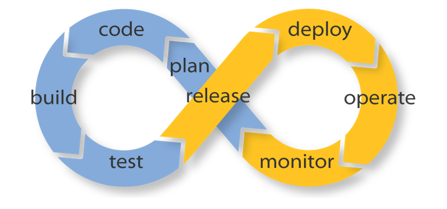

Вечканов Алексей
- Фронтенд-разработчик (Дата Технологии)
- Подрабытываю на freelance
- Занимаюсь своими проектами
Но как обычно выглядит процесс доставки кода?
Какие есть инструменты?

Минусы
- Долго
- Высокая вероятность ошибки
- Ручная проверка
Travis CI
Continuous Integration
Continuous Integration (CI) — это практика разработки, в которой члены команды проводят интеграцию не реже чем раз в день. Результаты интеграции проверяются автоматически, используя автотесты.
Что может Travis?
Атоматичекский деплой
Запуск тестов
Travis поддерживает:
- JavaScript
- Java
- PHP
- Python
- Ruby
- ...
Тесты
Travis проверит:
- Master перед разворотом
- Другие ветки
- Pull Requests
Оповещения
Заключение
Что мы узнали?
- Не тратим время и силы
- Повышаем безопасность с помощью тестов
- Получаем инфраструктуру
- Бесплатно
Переведите деплой своего проекта на Travic CI
- Travis CI - https://travis-ci.org/
- Официальная документация - https://docs.travis-ci.com/
- Деплой на GH Pages https://medium.com/...
- Деплой на хостинг - https://oncletom.io/2016/travis-ssh-deploy/
Спасибо.
Алексей Вечканов